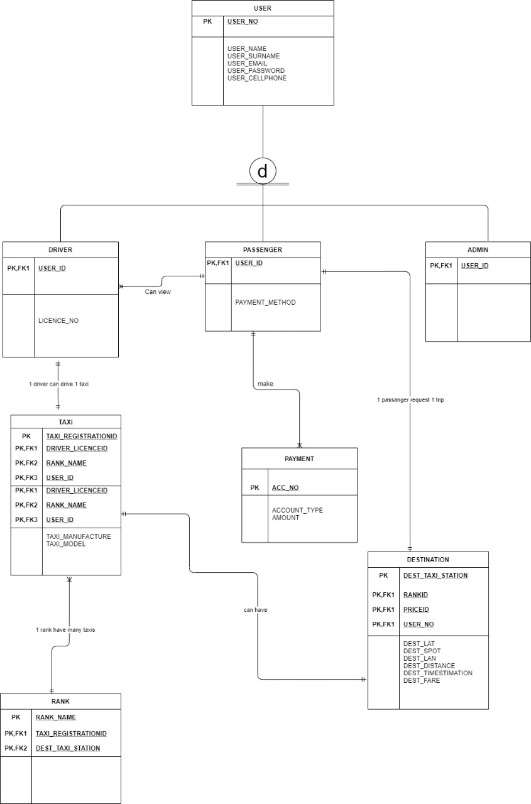

PROJECT 1 AUTO-TAXI SYSTEM
AutoTaxi-System
In groups of 7 we were given an assignment to create any system we want,we came with AUTO TAXI is a taxi industry-based software system which provides help to taxi passengers to find a taxi in a respective taxi rank to their destination. The software consists of registered routes which taxis uses from one rank to another to their end destination, therefore on its duty of commuting passengers, at first a user of the AUTO TAXI will gain access by logging in then navigate through the system according to the taxi rank she/he is in and find all the information about the taxis operations, and she will find all places that the taxis in that taxi rank transport passengers, and she/he will choose where he/she is heading. Then passengers will indicate his/her spot of being dropped off through the street’s names or any recognizable location through the AUTO TAXI software in line with the route of a taxi.A taxi driver is one of the users too where he/she must through the system sign in his personal credentials, even of the taxi he/she is driving, like registration number and color of the taxi. The taxi driver will activate his/her turn on a line of commuting passengers with the spot in a taxi rank where he/she is parked for passenger can easily identify the taxi. Therefore, after a passenger(s) find a taxi, she/he will identify his/her drop off spot and the taxi driver will receive a message of passenger(s) on where to be drop off on a registered route, of which there is a reminder to the taxi driver when the taxi has reached the spot for a passenger to get off the taxi when it has arrived or reached the spot identified of the passenger.
It evens support paying taxi fare through the system; therefore, it identifies the passenger who paid through the system to the taxi driver through the spot of being dropped of , as a measure of assurance of valid payment made. The AUTO TAXI aims to optimes the way we deal with mobility and make travelling more sustainable and efficient. AUTO TAXI provide solution on convenience public transport, smooth electronic fare transactions, travel time improvement and reductions in delays at intersections. It reduces even the case of being lost when looking for direction at times with misunderstanding when asking people about taxis operations. One of the main benefits is enhancing the safety and quality of life for everyone in urban, even rural areas. Overall, intelligent mobility’s main benefits include better safety, accessibility, and sustainability of transportation systems
we then came with another name for the system becouse the lecturers were not impressed by the first name of the system
iFindTaxi System
STUDENT NUMBER INITIALS & SURNAME 1.219203942 NN MNCWANGO 2. 219440561 PN MASHUMU 3. 219250240 ME LEFERELA 4. 219241550 AM MALATJI 5. MADELA TN 219244428 6.MKHABELA HA 219543522 7.LEFERELA ME 219250240 GROUP : K SUBJECT: DSO34BT YEAR : 2022CONTENTS
SYSTEM PROPOSAL NAME PROBLEM STATEMENT OBJECT/VISION SCOPE USERS OF THE SYSTEM FUNCTIONAL REQUIREMENTS USE CASE DIAGRAMS ERD TEST DATA DATABASE SCRIPTS SOCIAL NETWORK SITES PORTFOLIOS EVALUATION RUBRIC SYSTEM PROPOSAL NAME IFindTaxi System. PROBLEM STATEMENT
The current situation is that when people want to go somewhere they need transport, most people use taxis. The issue is normally overload, change when people have paid and time waisted when the driver takes different routes searching for other people. Each request made with a smart device leads to an early transport, correct route at the right time and no payment issues.OBECTIVE USERS OF THE SYSTEM
IFindTaxi System is a project is aimed at assisting passengers with finding taxi ranks and taxis to their respective desired destination. With just the click of finger any individual can access the software before they can travel to find the nearest taxi rank to wherever they want to go, prices are even displayed in respective of where one want to travel to. Firstly, a passenger will through the software in a taxi rank search to wherever they want to go after finding the nearest taxi rank to an extent of finding where the taxi is located inside the taxi rank line, and they can even pay through the software. It includes taxi drivers too as they play a role of registering their taxi credentials in the system and activating a taxi when it is their turn to commute passengers, so that a passenger can see an active taxi inside the IFindTaxi software as explained above. The primary objective of is for a IFindTaxi passenger to identify the spot of their destination where they want to be dropped off in line with a registered route taxis uses regularly, because in most cases people struggle with drop off spot due to communication misunderstandings of a taxi driver and a passenger.
TOOLS AND TECHNOLOGIES:
• HTML, CSS, and JavaScript
• Python
• Heroko- MySQL administration tool
• Google Maps API
• pgAdmin -Admistration
• Django
Users of the system:
− Passenger
− Taxi driver
− Administrators
- Taxi Association
SCOPE
The system’s primary end-users are the passengers and the drivers.
− Passenger
− Taxi driver
− Administrators
- Taxi Association
SCOPE The system’s primary end-users are the passengers and the drivers.
Role Role Project Sponsor Provide funding ,necessary guidance and resources Project Manager Plan, Organize, Direct and manage the team Front-end developer Design, codes ,debug and test user interfaces System administrator Architect the whole system environment Backend developer Design database and server technology Network administrator Integrate all network point for data transmission and security
FUNCTIONAL REQUIREMENTS
Requirement ID Requirement Statement Must/Want Comments FR001 The website shall have a list page which allow the one taxi association to register as an admin. Must FR002 The website shall have a list page which will allow the taxi driver to register as a driver. Must FR003 The website shall have an admin page where the admin can access the requested passengers, the admin can also approve a taxi and a driver Must Approve, DenyFR004 The website shall have the registration page for the passengers, this will give the passenger an option to register their profile before they can request for a ride. Must FR005 The website shall consist a request a ride page, the request a ride page must consist of the following input for the user to be able to request a ride. The pick-up location, the drop location, the type of taxi the requester wants to select. Must FR006 The website shall have multiple payment options page. Not everyone is comfortable paying via cash or card for the ride they take. Some passengers don’t carry cash while, others are wary of sharing their card details in the application due to some personal reasons. The best way to make it easy and efficient for everyone is to include multiple payment options, to allow the passenger to select from different options available. Must Cash, EFT FR007 The website shall have a real time tracking of driver page. The real time tracking will be working hand in hand with help of GPS integration. This will allow the users to track the driver’s location. Must FR008 The driver shall have an update page. Drivers can be able to update their personal details such as name and contact details etc. Under a page called “update details”. Want Name, passwords, email, contact details
EVENT DECOMPOSITION TECHNIQUE
The functionality of the system is summarized using the following event table:
Event Trigger Source Use Case Response Destination
Click on create account button Passenger enters registration information Passenger Create account Confirm new account System
Click on login button The passenger enters login details Passenger Log in Login confirmation System
Click on create account button Register as an admin Admin Create admin account Enter admin log in details System
Click on login under Admin|Login
Login as an admin Admin Log in Feedback about log in details System
The passenger is in need of the taxi The passenger creates the account Administrator Captures passenger info Confirm account System
Click on request type Make a request Passenger Make a request Request confirmation Admin
Driver gets a request Driver arrives at the location System Captures driver
movements System
Click a request Make a request Admin(Driver) Accept request Request confirmation Admin
Click accept request button Accept request Admin(Driver) Accept request Request accepted Passenger
Click deny button Reject request Driver Deny request Request
denied(notification) Passenger
Track request Check passenger location Admin Track passenger location Display the passenger location System
Click
complete Complete Request Admin Complete request Completed Passenger destination
ERD

4. Gantt Chart
Project name: iFindTaxi System
Description:
• Start date:Wednesday, July 27, 2022
• End date: Thursday, November 24,2022
• Project length: 5 Months
Task Name Start
End July August September October November
27/07 31/07 25/
07 27/
07 31/
07 03/
08 06/
08 17/
08 24/
08 01/
09 08/
09 15/
09 22/
10 29/
10 7/
11 14/
11 24/
11
Planning 25/07 31/07
1.1 Define project (name and description) 25/07 27/07
1.2 Define users and expertise 28/07 29/07
1.3 Define task components 29/07 31/07
Analysis 02/08 24/08
2.1 Analyse the inputs and output 02/08 06/08
2.2 Construct Use Case 17/08 18/08
2.3 Construct paper-type prototype 20/08 24/08
Design 01/09 29/09
3.1 Design the prototype 01/09 18/09
3.2 Get feedback from lecturer 23/09 30/09
3.3 Improve the design 01/10 12/10
3.4 Finalise the design and system 20/10 29/10
Implementation 18/11 24/11
4.1 Consult with the lecturer 20/11 20/11
4.2presentation 24/11 24/11 8
NON-FUNCTIONAL REQUIREMENTS:
• Security – access control through authentication and authorization measures
• Reliability – the system is available 24/7
• Performance – the system can handle multiple users at the same time
• Usability – the user interface responds seamlessly on desktop and mobile devices
TEST DATA
Test Case# Test Case Description
Test Case1 Check the output when entering valid email or password
Test Case2 Check the output when entering an invalid email and incorrect password
Test Case3 Check the response from the system when an email is left empty and the password entered is correct
Test Case4 Check the response from the system when an email is valid and the password the password is left empty
Test Case5 Check the output and the appropriate error message from the system when the email is empty and the password is also empty and the log in button is prompted
Test
Case
ID Test Scenario Test Steps Test Data Expected Results Actual Results Pass
/Fail
TC01 Check the output when entering valid email and password 1 Go to site http://taximo
ver.xyz/
2Enter valid email
address
3 enter
password
Click Log In Email = wanggeral d@icloud.
com
password
=
wanga@1
23 User should be given access to log in to the system As anticipat ed Pass
TC02 Check results on entering invalid email and invalid password 1 Go to site http://taximo
ver.xyz/
2Enter valid email address Email = wanggeral d@icloud @gmail....
com
password User should be denied access to the system As anticipat ed Pass
3 enter
password
Click Log In =
7wa123
TC0 3 Check the response when an email is empty and a password valid 1 Go to site http://taximo
ver.xyz/
2 do not enter email
address
3 enter
password
Click Log In Email =
password
=
wanga@1
23 User should be denied access to the system As anticipat ed Pass
TC04 Check the response when an email is valid and a password is empty 1 Go to site http://taximo ver.xyz/ 2 enter valid email
address
3 do not enter password
Click Log In Email = wanggeral d@icloud.
com
password
=
User should be denied access to the system As anticipat ed Pass
TC05 Check the response and appropriate error message when the email is empty, and the password is also empty and the log in button is pressed 1 Go to site http://taximo ver.xyz/ 2 do not enter valid email
address
3 do not enter password
Click Log In Email=
Password= User should be denied access As anticipat ed Pass
DATABASE SCRIPTS
-- Database: autotaxi
-- DROP DATABASE IF EXISTS autotaxi;
CREATE DATABASE autotaxi
WITH
OWNER = postgres
ENCODING = 'UTF8'
LC_COLLATE = 'C'
LC_CTYPE = 'C'
TABLESPACE = pg_default
CONNECTION LIMIT = -1
IS_TEMPLATE = False;
from django.db import models
from django.contrib.auth.models import User
# Create your models here.
class Passanger(models.Model):
user = models.OneToOneField(User,on_delete=models.CASCADE,related_name="passenger")
pass_cellphone = models.CharField(max_length=200)
dest_spot = models.CharField(max_length=200)
card_number = models.CharField(max_length=200)
payment_method = models.CharField(max_length=200)
def _str_(self) -> str:
return self.user.username + '|' + self.user.first_name
class Driver(models.Model):
user = models.OneToOneField(User,on_delete=models.CASCADE,related_name="driver")
driver_registrationID = models.CharField(max_length=30)
driver_cellphone = models.CharField(max_length=200)
driver_homeaddress = models.CharField(max_length=200)
driver_face_card = models.ImageField(upload_to='images/', default='pic_folder/None/no-img.png', verbose_name='face-pic')
class Taxi(models.Model):
registration = models.CharField(max_length=200)
manufature = models.CharField(max_length=200)
model = models.CharField(max_length=200)
driver = models.ForeignKey(Driver,on_delete=models.CASCADE)
def _str_(self) -> str:
return self.manufature + '-' + self.model
class Destination(models.Model):
name = models.CharField(max_length=200)
lat = models.FloatField()
lan = models.FloatField()
def _str_(self) -> str:
return self.name
class RankingTaxis(models.Model):
taxi = models.ForeignKey(Taxi,on_delete=models.CASCADE)
destination = models.ForeignKey(Destination,on_delete=models.CASCADE)
main_position = models.CharField(max_length=20)
second_position = models.CharField(max_length=20)
price = models.DecimalField(decimal_places=2,max_digits=5)
def _str_(self) -> str:
return self.taxi.model + ' >> ' + self.destination.name
class Rank(models.Model):
name = models.CharField(max_length=200)
location = models.CharField(max_length = 200)
ranking_taxis = models.ManyToManyField(RankingTaxis)
def _str_(self) -> str:
return self.name
class TaxiStatus(models.Model):
taxi = models.OneToOneField(Taxi, on_delete=models.CASCADE)
is_active = models.BooleanField(default=False)
is_loading = models.BooleanField(default=False)
NETWORK SITES
Facebook: https://www.facebook.com/profile.php?id=100087900197138&mibextid=LQQJ4d
Instagram: https://instagram.com/find_taxi22?igshid=YmMyMTA2M2Y=
USER MANUALS
Introduction.
-This system is an initiative to make the usage of public transport easy and more
convenient for both passengers and drivers.
-It allows passengers to search for taxis and find taxi ranks.
-It is a web-based application; therefore it requires internet access to operate.
-A user can register themselves as a passenger, driver.
-The Admin can access the admistration side through an extension called pgAdmin
HOW TO REGISTER A DRIVER.
Step 1: Click on “Sign up as Driver” as shown by the arrow on the image below.
Step 2: Fill in all the details required.
Step 3: Click “sign up” to successfully create your account as a driver.
Step 4: Check the “remember me box” to save your passwords for next time log in
Step 5: Pop up messages will appear to show you have successfully created an account with us a driver.
Step 6: click “confirm” to continue to log in as a successfully registered driver.
Step 7: click “Log in” And use your details to continue.
Step 8: Add the details of your taxi Click the button “Add taxi” if you haven’t added your taxi
HOW WO REGISTER AS A PASSANGER
Step 1:Click on “Register” button on your top corner.
Step 2: Add your details as a passanger to register your account and click “Sign up” when your done
Step 3: Pop us messages will notify you once you have successfully created an account
Step 4: Add where you want to catch the taxi and where you are going and click “find taxi” to find taxi ranks near by.
Step 5:A list of possible taxi ranks will be listed, click “Ride here” to see the location of the taxi rank on the map
Step 6: Click “Pay taxi fair” to pay taxi fee of the taxi your currently inside.
Step 7: Add your banking details and click “Pay” to pay.
PORTFOLIO
NAME: Katlego ‘
SERUMULA: Serumula
STUDENT NO: 219497415
EMAIL: 219497415@tut4life.ac.za
I Katlego Serumula, a DSO34BT student in group F, contributed my best towards pitching the Concept of our system, drafting ERD rough sketch, functional requirements, database scripts and assigning duties to group members.
1. 27 July 2022
We meet in class and start knowing each other as group members, pitched few ideas which we rejected and after a group WhatsApp was created.
2. 27 July 2022
A teams meeting was created for us to meet online and discuss the way forward and brainstormed on how to come up with other system ideas.
3. 28 July 2022
We meet physically and pitched the idea of finding a taxi in the station and it was accepted.
4. 06 August 2022
We reviewed the posted on Brightspace and assigned tasks amongst group members.
5. 17 August 2022
We meet at campus to discuss and present our tasks amongst each other to see they are according to the standards of the rubric.
6. 24 August 2022
We had online meeting to discuss ERD and use case diagrams.
7. 05 September 2022
We presented on what we worked and achieved up to this date of which we had some errors on logging in and database.
8. 18 September 2022
We rectified our ERD.
9. 27 September 2022
We held an online meeting to discuss progress of our tasks and corrected each other on what is incorrect.
10. 01 October 2022
We met online towards preparation of the upcoming evaluation
11. 17 October 2022
We had a meeting at campus to demonstrate the capabilities that the system was able to achieve and worked on achieving other capabilities that where unavailable.
12. 19 October 2022
We went to present 3 & 4 evaluation according to the rubric and we were corrected on what to implement from what we present. And got penalised from other capabilities our system was unable to accomplish.
13. 25 October 2022
We met at campus to fix the errors we had after our presentation.
14. 29 October 2022
Reviewed the design and system.
15. 05 November 2022
Held an online meeting session to track progress of the system.
16. 20 November 2022
We consulted with the lecturer to show them our progress and we highlighted certain errors on ERD and admin site.
17. 23 November 2022
All our document got printed out.
18. 24 November 2022
Final presentation.
NAME(S): Hlengiwe Angel
SURNAME: Mkhabela
STUDENT NUMBER: 219543522
EMAIL: 219543522@tut4life.ac.za
I am Hlengiwe Mkhabela, a Software Development student currently registered for DSO34BT,
placed in Group K. I participated in drawing the use cases, event table, non-functional requirements, I created links for virtual meetings and I am the one who was responsible for compiling most parts of our proposal.
Tasks and Key Responsibilities
26 July 2022
The WhatsApp group was created and we joined after seeing which group we were assigned to.
27 July 2022
We shared different ideas on what kind of system we can create and how it will benefit out target audience. Finally, we picked our top three ideas.
28 July 2022
System Idea Proposal : We went to campus to pitch our ideas of the system we had to the lecturers, and the iFindTaxi system was selected as the system we needed to develop .We went through different proposal templates, did research on the type of format that the lecturers could be expecting from us.
17 August 2022
We had a meeting where we went through the rubric and divided the work amongst ourselves equally and fairly.
24 August 2022
We had a meeting on campus and made all preparations regarding our first evaluation which would take place the next day. We finalized our first tasks.
05 September 2022
First Evaluation: This was the day of the presentation of our first assessment. We had to present the first content according to the rubric. The lecturers gave us feedback on our system.
18 September2022
We fixed all the mistakes that were on our ERD using the feedback we got from the lecturers. We also reviewed our UML diagrams which are the use case, activity diagrams ect.
01 October 2022
We had an online meeting where we went through the rubric for the second evaluation and divided the work amongst ourselves based on it. We worked on the second evaluation together and took pictures for our group profile.
19 November 2022
I created my personal profile with all the information required from me and how I helped my team with this project.
20 November 2022
We had our last meeting on campus to finalize the proposal, go through it again and make all the necessary changes. We also went to the lecturers for consultation. We prepared each other for the presentation and everyone understood their parts.
22 November 2022
All the documentation was printed day before the final presentation as instructed.
23 NOVEMBER 2022
We had our final presentation for our IFindTaxi system.
NAME: Nosipho
SURNAME: Mncwango
STUDENT NO: 219203942
EMAIL: 219203942@tut4life.ac.za
I'm currently registered for DSO34BT in group F. My efforts and contributions were critical to the success of this system. I was involved in the entire process and contributed more to the following areas: developing a system proposal, creating an ERD, use cases, compiling a proposal, and creating a Gantt chart.
DATE: 27 July 2022
We set up a contact meeting on campus and made a formal introduction. We then decided to form a WhatsApp group and pitch a few system-related ideas.
DATE: 27 July 2022
We later decided to continue our discussion on the WhatsApp group on the same day we met. We scheduled an online meeting and shared even more fantastic ideas.
DATE: 28 July 2022
We met on campus and pitched our idea about how to help the taxi industry, which was accepted.
DATE: 06 August 2022
We assigned a task to each member.
DATE: 17 August 2022
We scheduled another meeting to see if we were still keeping up with our assigned tasks and to assess progress based on the rubric.
DATE: 24 August 2022
We held an online meeting to go over the ERD and use case diagrams.
DATE: 05 September 2022
This was our first evaluation day so we presented our system tom our lectures and they pointed out some errors and some functionalities that were to be implemented.
DATE: 18 September2022
We corrected our errors and the ERD.
DATE: 27 September 2022
We held an online meeting to discuss the status of our tasks and to correct each other when we were wrong.
DATE: 01 October 2022
We met online to prepare for the upcoming evaluation.
DATE: 17 October 2022
We met on campus to assess progress and determine what the system can and cannot do
DATE: 19 October 2022
We went to present 3 and 4 evaluations based on the rubric and were corrected on what to implement based on what we presented. And was penalized for other capabilities that our system was unable to achieve. We later on created personal portfolios .
DATE: 25 October 2022
We met on campus to correct the mistakes we made after our presentation.
DATE: 29 October 2022
The design and system were both examined.
05 November 2022
An online meeting session was held to track the system's progress.
DATE: 20 November 2022
We met with the lecturer to show them our progress, and we then went through the whole system and documentation to keep on track.
DATE: 23 November 2022
Everything was finalized and we prepared for the final presentation day.
DATE: 29 November 2022
The system's final presentation day.
NAME Metse Eunice
SURNAME Leferela
STUDENT NO :219250240
EMAIL: 219250240@tut4life.ac.za
I Eunice Leferela , as Software development student whose currently registered for DSO34BT, I’m in group K. I participated in drawing the Gantt Chart with my fellow group member, proposal and functional requirements.
Tasks and Key Responsibility
27 July 2022
We meet in class and started knowing each other as group members, pitched few ideas which we rejected and we created a whatsapp group chart.
27 July 2022
A teams meeting was created for us to meet online and discuss the way forward and brainstormed on how to come up with other system ideas.
28 July 2022
We meet physically and pitched the idea of finding a taxi in the station and it was accepted.
06 August 2022
Each group member was given Tasks to do.
17 August 2022
We meet at campus to see what each member has done on their assigned tasks to see they are according to the standards of the rubric.
24 August 2022
We conducted a meeting discussed the ERD and use case diagrams.
05 September 202
We had errors on the database We worked on that.
18 September 2022
We fixed our ERD.
27 September 2022
We had an online meeting to help each other on the tasks.
01 October 2022
We met online for the upcoming evaluation.
17 October 2022
We had a meeting at campus to demonstrate the capabilities that the system was able to achieve and worked on achieving other capabilities that where unavailable.
19 October 2022
We presented 3 & 4 evaluation according to the rubric and we were corrected on what to implement from what we present. And got penalised from other capabilities our system was unable to accomplish.
25 October 2022
We met at campus to fix the errors we had after our presentation.
05 November 2022
Held an online meeting session to talk about progress of the system.
20 November 2022
We consulted with the lecturer to show them our ERD and the progress of the system and we highlighted certain errors on ERD and admin site.
23 November 2022
We Printed our documents.
24 November 2022
Final presentation.
NAME Prince Ngwako
SURNAME Mashumu
STUDENT NO : 219440561
EMAIL: 219440561@tut4life.ac.za
By names I am Prince Ngwako And my sur name is Mashumu, On this project I developed the use cases of each user that is interacting with system which are the drivers and the users and developed the use case diagrams. I participated in coming up with use case concepts And I also helped with the ERD concepts of our system. I am responsible for the documenting the user manual and instructions for users.
DATE: 27 July 2022
We set up a contact meeting nearby and made a conventional presentation. We then, at that point, chose to frame a WhatsApp gathering and pitch a couple of framework related thoughts.
DATE: 27 July 2022
We later chose to proceed with our conversation on the WhatsApp bunch around the same time we met. We booked an internet meeting and shared significantly more awesome thoughts.
DATE: 28 July 2022
We met nearby and tried out our thought regarding how to help the taxi business, which was acknowledged.
DATE: 06 August 2022
We assigned a task to each member.
DATE: 17 August 2022
We booked one more gathering to check whether we were all the while staying aware of our doled out errands and to evaluate progress in light of the rubric.
DATE: 24 August 2022
We held a web based gathering to go over the ERD and use case charts.
DATE: 05 September 2022
This was our most memorable assessment day so we introduced our framework tom our talks and they called attention to certain blunders and a few functionalities that should have been executed.
DATE: 18 September2022
We corrected our errors and the ERD.
DATE: 27 September 2022
We held an internet meeting to talk about the situation with our undertakings and to address each other when we were off-base.
DATE: 01 October 2022
We met online to get ready for the impending assessment.
DATE: 17 October 2022
We met on campus to assess progress and determine what the system can and cannot do
DATE: 19 October 2022
We went to introduce 3 and 4 assessments in view of the rubric and were remedied on what to execute in light of what we introduced. Also, was punished for different abilities that our framework couldn't accomplish. We later on made individual portfolios .
DATE: 25 October 2022
We met on campus to correct the mistakes we made after our presentation.
DATE: 29 October 2022
The design and system were both examined.
05 November 2022
An online meeting session was held to track the system's progress.
DATE: 20 November 2022
We met with the lecturer to show them our progress, and we then went through the whole system and documentation to keep on track.
DATE: 23 November 2022
Everything was finalized and we prepared for the final presentation day.
DATE: 29 November 2022
The system's final presentation day.
NAME: Tracy Nonjabulo
SURNAME: Madela
STUDENT NO: 219244428
EMAIL: 219244428@tut4life.ac.z
I am Tracy Nonjabulo Madela, as Software development student who’s currently registered for DSO34BT, I’m in Group k. I participated in drawing the ERD with my fellow group member, user case, functional requirements (e.g. coding using python), Gantt chart.
26 July 2022
I came up with an idea of creating the ID, Birth certificate, Passport, Marriage certificate using your own device. My idea was rejected since we can’t access home affairs database to find more information.
27 July 2022
We held a meeting with Mr Phiihlela in his office. We managed to pitch the 3 ideas that we had chosen, but the lecture chose to approve the iFind Taxi system.
28 July 2022
We had a Teams meeting where we went through the rubric and divided the work amongst ourselves equally and fairly.
17 August
On this day we met at the campus, we met at the campus as agreed we did research on how to write a report by checking out some of the reports so that we could be familiar with the format.
24 August 2022
We had a meeting on campus and made all preparations regarding our first evaluation which would take place the next day We finalized our first tasks.
05 September 2022
First Evaluation This was the day of the presentation of our first assessment. We had to present the first content according to the rubric. Although we were ready for the virtual presentation, we made a mistake of not understanding what the rubric instructed. and we automatically got a zero for ERD.
18 September 2022
We fixed all the mistakes that were on our ERD..
17 October 2022
We met on campus, worked on the second evaluation together and took pictures for our group profile.
20November 2022
I created my personal profile with all the information required from me and how I helped my team with this project.
22November 2022
We had our last meeting on campus to finalize the proposal, go through it again and make all the necessary changes. We prepared each other for the presentation and everyone understood their parts. All the documentation was printed day before the final presentation as instructed.
24 November 2022
We had Our Final Presentation.
this is the admin side of the system the admin will register the taxi ranks.
credentials are :
username=Seru
password=alfa1234
https://ifindtaxi.herokuapp.com/admin/taxi/rank/add/
This is the interface of the system
https://findtaxi.co.za/findtaxi.co.za
This is the database we used heroku to host our database
https://data.heroku.com/data.heroku.com/dataclips/dkjwukukozzrcsxmvivchniuzuzt
PROJECT 2
I created a challege for the students in a module of DSO23AT November-2022 for them to get 80% i was their Tutor and above in the module
not only did the students pass,most students got a distinction in the test
I believe in ubuntu and a hand that gives is a hand that receives
.png)
.png)
.png)
PROJECT 3
I JOINED THE 4TH ANNUAL TSHWANE VARSITY HACKATHON
The Tshwane University of Technology’s Faculty of Information and Communication Technology (ICT),
in partnership with the Directorate of Research, Innovation and Technology Transfer Office,
launched the 4thTshwane Varsity Hackathon (TVH) on Mandela Day,18 July 2022. It will form part of TUT’s support to the National Development Plan (Vision 2030).
The TVH is an annual hacking competition, introduced by Mashitishi Phurutsi, Manager at ICT’s First year and Foundation Unit and Chief Organiser of the TVH in 2019.
Partners from industry, the City of Tshwane, and other universities will are invited to present 21st century challenges that could be used to develop technology-based solutions.
These challenges and ideas will then be captured and put in a backlog. The hackers participating in the competition,
will not know the challenges until the day of the official launch of the Hackathon.
unfortunatly i could'n be able to continue participating in the hackathon ,becouse exams started and i had to focus on my exams
either way i really learned a lot both both my team mates and the AWS team ,
it was really a pleasure to be part of the hackathon .
The functionality of the system is summarized using the following event table: Event Trigger Source Use Case Response Destination Click on create account button Passenger enters registration information Passenger Create account Confirm new account System Click on login button The passenger enters login details Passenger Log in Login confirmation System Click on create account button Register as an admin Admin Create admin account Enter admin log in details System Click on login under Admin|Login Login as an admin Admin Log in Feedback about log in details System The passenger is in need of the taxi The passenger creates the account Administrator Captures passenger info Confirm account System Click on request type Make a request Passenger Make a request Request confirmation Admin Driver gets a request Driver arrives at the location System Captures driver movements System Click a request Make a request Admin(Driver) Accept request Request confirmation Admin Click accept request button Accept request Admin(Driver) Accept request Request accepted Passenger Click deny button Reject request Driver Deny request Request denied(notification) Passenger Track request Check passenger location Admin Track passenger location Display the passenger location System Click complete Complete Request Admin Complete request Completed Passenger destination
ERD
Task Name Start End July August September October November 27/07 31/07 25/ 07 27/ 07 31/ 07 03/ 08 06/ 08 17/ 08 24/ 08 01/ 09 08/ 09 15/ 09 22/ 10 29/ 10 7/ 11 14/ 11 24/ 11 Planning 25/07 31/07 1.1 Define project (name and description) 25/07 27/07 1.2 Define users and expertise 28/07 29/07 1.3 Define task components 29/07 31/07 Analysis 02/08 24/08 2.1 Analyse the inputs and output 02/08 06/08 2.2 Construct Use Case 17/08 18/08 2.3 Construct paper-type prototype 20/08 24/08 Design 01/09 29/09 3.1 Design the prototype 01/09 18/09 3.2 Get feedback from lecturer 23/09 30/09 3.3 Improve the design 01/10 12/10 3.4 Finalise the design and system 20/10 29/10 Implementation 18/11 24/11 4.1 Consult with the lecturer 20/11 20/11 4.2presentation 24/11 24/11 8
NON-FUNCTIONAL REQUIREMENTS: • Security – access control through authentication and authorization measures • Reliability – the system is available 24/7 • Performance – the system can handle multiple users at the same time • Usability – the user interface responds seamlessly on desktop and mobile devices TEST DATA Test Case# Test Case Description Test Case1 Check the output when entering valid email or password Test Case2 Check the output when entering an invalid email and incorrect password Test Case3 Check the response from the system when an email is left empty and the password entered is correct Test Case4 Check the response from the system when an email is valid and the password the password is left empty Test Case5 Check the output and the appropriate error message from the system when the email is empty and the password is also empty and the log in button is prompted Test Case ID Test Scenario Test Steps Test Data Expected Results Actual Results Pass /Fail TC01 Check the output when entering valid email and password 1 Go to site http://taximo ver.xyz/ 2Enter valid email address 3 enter password Click Log In Email = wanggeral d@icloud. com password = wanga@1 23 User should be given access to log in to the system As anticipat ed Pass TC02 Check results on entering invalid email and invalid password 1 Go to site http://taximo ver.xyz/ 2Enter valid email address Email = wanggeral d@icloud @gmail.... com password User should be denied access to the system As anticipat ed Pass 3 enter password Click Log In = 7wa123 TC0 3 Check the response when an email is empty and a password valid 1 Go to site http://taximo ver.xyz/ 2 do not enter email address 3 enter password Click Log In Email = password = wanga@1 23 User should be denied access to the system As anticipat ed Pass TC04 Check the response when an email is valid and a password is empty 1 Go to site http://taximo ver.xyz/ 2 enter valid email address 3 do not enter password Click Log In Email = wanggeral d@icloud. com password = User should be denied access to the system As anticipat ed Pass TC05 Check the response and appropriate error message when the email is empty, and the password is also empty and the log in button is pressed 1 Go to site http://taximo ver.xyz/ 2 do not enter valid email address 3 do not enter password Click Log In Email= Password= User should be denied access As anticipat ed Pass
DATABASE SCRIPTS
-- Database: autotaxi-- DROP DATABASE IF EXISTS autotaxi;
CREATE DATABASE autotaxi
WITH OWNER = postgres ENCODING = 'UTF8' LC_COLLATE = 'C' LC_CTYPE = 'C' TABLESPACE = pg_default CONNECTION LIMIT = -1 IS_TEMPLATE = False; from django.db import models from django.contrib.auth.models import User # Create your models here. class Passanger(models.Model): user = models.OneToOneField(User,on_delete=models.CASCADE,related_name="passenger") pass_cellphone = models.CharField(max_length=200) dest_spot = models.CharField(max_length=200) card_number = models.CharField(max_length=200) payment_method = models.CharField(max_length=200) def _str_(self) -> str: return self.user.username + '|' + self.user.first_name class Driver(models.Model): user = models.OneToOneField(User,on_delete=models.CASCADE,related_name="driver") driver_registrationID = models.CharField(max_length=30) driver_cellphone = models.CharField(max_length=200) driver_homeaddress = models.CharField(max_length=200) driver_face_card = models.ImageField(upload_to='images/', default='pic_folder/None/no-img.png', verbose_name='face-pic') class Taxi(models.Model): registration = models.CharField(max_length=200) manufature = models.CharField(max_length=200) model = models.CharField(max_length=200) driver = models.ForeignKey(Driver,on_delete=models.CASCADE) def _str_(self) -> str: return self.manufature + '-' + self.model class Destination(models.Model): name = models.CharField(max_length=200) lat = models.FloatField() lan = models.FloatField() def _str_(self) -> str: return self.name class RankingTaxis(models.Model): taxi = models.ForeignKey(Taxi,on_delete=models.CASCADE) destination = models.ForeignKey(Destination,on_delete=models.CASCADE) main_position = models.CharField(max_length=20) second_position = models.CharField(max_length=20) price = models.DecimalField(decimal_places=2,max_digits=5) def _str_(self) -> str: return self.taxi.model + ' >> ' + self.destination.name class Rank(models.Model): name = models.CharField(max_length=200) location = models.CharField(max_length = 200) ranking_taxis = models.ManyToManyField(RankingTaxis) def _str_(self) -> str: return self.name class TaxiStatus(models.Model): taxi = models.OneToOneField(Taxi, on_delete=models.CASCADE) is_active = models.BooleanField(default=False) is_loading = models.BooleanField(default=False)NETWORK SITES
Facebook: https://www.facebook.com/profile.php?id=100087900197138&mibextid=LQQJ4d
Instagram: https://instagram.com/find_taxi22?igshid=YmMyMTA2M2Y=
USER MANUALS
Introduction.
-This system is an initiative to make the usage of public transport easy and more convenient for both passengers and drivers. -It allows passengers to search for taxis and find taxi ranks. -It is a web-based application; therefore it requires internet access to operate. -A user can register themselves as a passenger, driver. -The Admin can access the admistration side through an extension called pgAdminHOW TO REGISTER A DRIVER. Step 1: Click on “Sign up as Driver” as shown by the arrow on the image below. Step 2: Fill in all the details required. Step 3: Click “sign up” to successfully create your account as a driver. Step 4: Check the “remember me box” to save your passwords for next time log in Step 5: Pop up messages will appear to show you have successfully created an account with us a driver. Step 6: click “confirm” to continue to log in as a successfully registered driver. Step 7: click “Log in” And use your details to continue. Step 8: Add the details of your taxi Click the button “Add taxi” if you haven’t added your taxi
HOW WO REGISTER AS A PASSANGER Step 1:Click on “Register” button on your top corner. Step 2: Add your details as a passanger to register your account and click “Sign up” when your done Step 3: Pop us messages will notify you once you have successfully created an account Step 4: Add where you want to catch the taxi and where you are going and click “find taxi” to find taxi ranks near by. Step 5:A list of possible taxi ranks will be listed, click “Ride here” to see the location of the taxi rank on the map Step 6: Click “Pay taxi fair” to pay taxi fee of the taxi your currently inside. Step 7: Add your banking details and click “Pay” to pay.
PORTFOLIO
NAME: Katlego ‘ SERUMULA: Serumula STUDENT NO: 219497415 EMAIL: 219497415@tut4life.ac.za I Katlego Serumula, a DSO34BT student in group F, contributed my best towards pitching the Concept of our system, drafting ERD rough sketch, functional requirements, database scripts and assigning duties to group members. 1. 27 July 2022 We meet in class and start knowing each other as group members, pitched few ideas which we rejected and after a group WhatsApp was created. 2. 27 July 2022 A teams meeting was created for us to meet online and discuss the way forward and brainstormed on how to come up with other system ideas. 3. 28 July 2022 We meet physically and pitched the idea of finding a taxi in the station and it was accepted. 4. 06 August 2022 We reviewed the posted on Brightspace and assigned tasks amongst group members. 5. 17 August 2022 We meet at campus to discuss and present our tasks amongst each other to see they are according to the standards of the rubric. 6. 24 August 2022 We had online meeting to discuss ERD and use case diagrams. 7. 05 September 2022 We presented on what we worked and achieved up to this date of which we had some errors on logging in and database. 8. 18 September 2022 We rectified our ERD. 9. 27 September 2022 We held an online meeting to discuss progress of our tasks and corrected each other on what is incorrect. 10. 01 October 2022 We met online towards preparation of the upcoming evaluation 11. 17 October 2022 We had a meeting at campus to demonstrate the capabilities that the system was able to achieve and worked on achieving other capabilities that where unavailable. 12. 19 October 2022 We went to present 3 & 4 evaluation according to the rubric and we were corrected on what to implement from what we present. And got penalised from other capabilities our system was unable to accomplish. 13. 25 October 2022 We met at campus to fix the errors we had after our presentation. 14. 29 October 2022 Reviewed the design and system. 15. 05 November 2022 Held an online meeting session to track progress of the system. 16. 20 November 2022 We consulted with the lecturer to show them our progress and we highlighted certain errors on ERD and admin site. 17. 23 November 2022 All our document got printed out. 18. 24 November 2022 Final presentation.NAME(S): Hlengiwe Angel SURNAME: Mkhabela STUDENT NUMBER: 219543522 EMAIL: 219543522@tut4life.ac.za
I am Hlengiwe Mkhabela, a Software Development student currently registered for DSO34BT, placed in Group K. I participated in drawing the use cases, event table, non-functional requirements, I created links for virtual meetings and I am the one who was responsible for compiling most parts of our proposal. Tasks and Key Responsibilities 26 July 2022 The WhatsApp group was created and we joined after seeing which group we were assigned to. 27 July 2022 We shared different ideas on what kind of system we can create and how it will benefit out target audience. Finally, we picked our top three ideas. 28 July 2022 System Idea Proposal : We went to campus to pitch our ideas of the system we had to the lecturers, and the iFindTaxi system was selected as the system we needed to develop .We went through different proposal templates, did research on the type of format that the lecturers could be expecting from us. 17 August 2022 We had a meeting where we went through the rubric and divided the work amongst ourselves equally and fairly. 24 August 2022 We had a meeting on campus and made all preparations regarding our first evaluation which would take place the next day. We finalized our first tasks. 05 September 2022 First Evaluation: This was the day of the presentation of our first assessment. We had to present the first content according to the rubric. The lecturers gave us feedback on our system. 18 September2022 We fixed all the mistakes that were on our ERD using the feedback we got from the lecturers. We also reviewed our UML diagrams which are the use case, activity diagrams ect. 01 October 2022 We had an online meeting where we went through the rubric for the second evaluation and divided the work amongst ourselves based on it. We worked on the second evaluation together and took pictures for our group profile. 19 November 2022 I created my personal profile with all the information required from me and how I helped my team with this project. 20 November 2022 We had our last meeting on campus to finalize the proposal, go through it again and make all the necessary changes. We also went to the lecturers for consultation. We prepared each other for the presentation and everyone understood their parts. 22 November 2022 All the documentation was printed day before the final presentation as instructed. 23 NOVEMBER 2022 We had our final presentation for our IFindTaxi system.NAME: Nosipho SURNAME: Mncwango STUDENT NO: 219203942 EMAIL: 219203942@tut4life.ac.za
I'm currently registered for DSO34BT in group F. My efforts and contributions were critical to the success of this system. I was involved in the entire process and contributed more to the following areas: developing a system proposal, creating an ERD, use cases, compiling a proposal, and creating a Gantt chart. DATE: 27 July 2022 We set up a contact meeting on campus and made a formal introduction. We then decided to form a WhatsApp group and pitch a few system-related ideas. DATE: 27 July 2022 We later decided to continue our discussion on the WhatsApp group on the same day we met. We scheduled an online meeting and shared even more fantastic ideas. DATE: 28 July 2022 We met on campus and pitched our idea about how to help the taxi industry, which was accepted. DATE: 06 August 2022 We assigned a task to each member. DATE: 17 August 2022 We scheduled another meeting to see if we were still keeping up with our assigned tasks and to assess progress based on the rubric. DATE: 24 August 2022 We held an online meeting to go over the ERD and use case diagrams. DATE: 05 September 2022 This was our first evaluation day so we presented our system tom our lectures and they pointed out some errors and some functionalities that were to be implemented. DATE: 18 September2022 We corrected our errors and the ERD. DATE: 27 September 2022 We held an online meeting to discuss the status of our tasks and to correct each other when we were wrong. DATE: 01 October 2022 We met online to prepare for the upcoming evaluation. DATE: 17 October 2022 We met on campus to assess progress and determine what the system can and cannot do DATE: 19 October 2022 We went to present 3 and 4 evaluations based on the rubric and were corrected on what to implement based on what we presented. And was penalized for other capabilities that our system was unable to achieve. We later on created personal portfolios . DATE: 25 October 2022 We met on campus to correct the mistakes we made after our presentation. DATE: 29 October 2022 The design and system were both examined. 05 November 2022 An online meeting session was held to track the system's progress. DATE: 20 November 2022 We met with the lecturer to show them our progress, and we then went through the whole system and documentation to keep on track. DATE: 23 November 2022 Everything was finalized and we prepared for the final presentation day. DATE: 29 November 2022 The system's final presentation day.NAME Metse Eunice SURNAME Leferela STUDENT NO :219250240 EMAIL: 219250240@tut4life.ac.za
I Eunice Leferela , as Software development student whose currently registered for DSO34BT, I’m in group K. I participated in drawing the Gantt Chart with my fellow group member, proposal and functional requirements. Tasks and Key Responsibility 27 July 2022 We meet in class and started knowing each other as group members, pitched few ideas which we rejected and we created a whatsapp group chart. 27 July 2022 A teams meeting was created for us to meet online and discuss the way forward and brainstormed on how to come up with other system ideas. 28 July 2022 We meet physically and pitched the idea of finding a taxi in the station and it was accepted. 06 August 2022 Each group member was given Tasks to do. 17 August 2022 We meet at campus to see what each member has done on their assigned tasks to see they are according to the standards of the rubric. 24 August 2022 We conducted a meeting discussed the ERD and use case diagrams. 05 September 202 We had errors on the database We worked on that. 18 September 2022 We fixed our ERD. 27 September 2022 We had an online meeting to help each other on the tasks. 01 October 2022 We met online for the upcoming evaluation. 17 October 2022 We had a meeting at campus to demonstrate the capabilities that the system was able to achieve and worked on achieving other capabilities that where unavailable. 19 October 2022 We presented 3 & 4 evaluation according to the rubric and we were corrected on what to implement from what we present. And got penalised from other capabilities our system was unable to accomplish. 25 October 2022 We met at campus to fix the errors we had after our presentation. 05 November 2022 Held an online meeting session to talk about progress of the system. 20 November 2022 We consulted with the lecturer to show them our ERD and the progress of the system and we highlighted certain errors on ERD and admin site. 23 November 2022 We Printed our documents. 24 November 2022 Final presentation.NAME Prince Ngwako SURNAME Mashumu STUDENT NO : 219440561 EMAIL: 219440561@tut4life.ac.za
By names I am Prince Ngwako And my sur name is Mashumu, On this project I developed the use cases of each user that is interacting with system which are the drivers and the users and developed the use case diagrams. I participated in coming up with use case concepts And I also helped with the ERD concepts of our system. I am responsible for the documenting the user manual and instructions for users. DATE: 27 July 2022 We set up a contact meeting nearby and made a conventional presentation. We then, at that point, chose to frame a WhatsApp gathering and pitch a couple of framework related thoughts. DATE: 27 July 2022 We later chose to proceed with our conversation on the WhatsApp bunch around the same time we met. We booked an internet meeting and shared significantly more awesome thoughts. DATE: 28 July 2022 We met nearby and tried out our thought regarding how to help the taxi business, which was acknowledged. DATE: 06 August 2022 We assigned a task to each member. DATE: 17 August 2022 We booked one more gathering to check whether we were all the while staying aware of our doled out errands and to evaluate progress in light of the rubric. DATE: 24 August 2022 We held a web based gathering to go over the ERD and use case charts. DATE: 05 September 2022 This was our most memorable assessment day so we introduced our framework tom our talks and they called attention to certain blunders and a few functionalities that should have been executed. DATE: 18 September2022 We corrected our errors and the ERD. DATE: 27 September 2022 We held an internet meeting to talk about the situation with our undertakings and to address each other when we were off-base. DATE: 01 October 2022 We met online to get ready for the impending assessment. DATE: 17 October 2022 We met on campus to assess progress and determine what the system can and cannot do DATE: 19 October 2022 We went to introduce 3 and 4 assessments in view of the rubric and were remedied on what to execute in light of what we introduced. Also, was punished for different abilities that our framework couldn't accomplish. We later on made individual portfolios . DATE: 25 October 2022 We met on campus to correct the mistakes we made after our presentation. DATE: 29 October 2022 The design and system were both examined. 05 November 2022 An online meeting session was held to track the system's progress. DATE: 20 November 2022 We met with the lecturer to show them our progress, and we then went through the whole system and documentation to keep on track. DATE: 23 November 2022 Everything was finalized and we prepared for the final presentation day. DATE: 29 November 2022 The system's final presentation day. NAME: Tracy Nonjabulo SURNAME: Madela STUDENT NO: 219244428 EMAIL: 219244428@tut4life.ac.z I am Tracy Nonjabulo Madela, as Software development student who’s currently registered for DSO34BT, I’m in Group k. I participated in drawing the ERD with my fellow group member, user case, functional requirements (e.g. coding using python), Gantt chart. 26 July 2022 I came up with an idea of creating the ID, Birth certificate, Passport, Marriage certificate using your own device. My idea was rejected since we can’t access home affairs database to find more information. 27 July 2022 We held a meeting with Mr Phiihlela in his office. We managed to pitch the 3 ideas that we had chosen, but the lecture chose to approve the iFind Taxi system. 28 July 2022 We had a Teams meeting where we went through the rubric and divided the work amongst ourselves equally and fairly. 17 August On this day we met at the campus, we met at the campus as agreed we did research on how to write a report by checking out some of the reports so that we could be familiar with the format. 24 August 2022We had a meeting on campus and made all preparations regarding our first evaluation which would take place the next day We finalized our first tasks. 05 September 2022 First Evaluation This was the day of the presentation of our first assessment. We had to present the first content according to the rubric. Although we were ready for the virtual presentation, we made a mistake of not understanding what the rubric instructed. and we automatically got a zero for ERD. 18 September 2022 We fixed all the mistakes that were on our ERD.. 17 October 2022 We met on campus, worked on the second evaluation together and took pictures for our group profile. 20November 2022 I created my personal profile with all the information required from me and how I helped my team with this project. 22November 2022 We had our last meeting on campus to finalize the proposal, go through it again and make all the necessary changes. We prepared each other for the presentation and everyone understood their parts. All the documentation was printed day before the final presentation as instructed. 24 November 2022 We had Our Final Presentation.
this is the admin side of the system the admin will register the taxi ranks. credentials are : username=Seru password=alfa1234https://ifindtaxi.herokuapp.com/admin/taxi/rank/add/
This is the interface of the systemhttps://findtaxi.co.za/findtaxi.co.za
This is the database we used heroku to host our databasehttps://data.heroku.com/data.heroku.com/dataclips/dkjwukukozzrcsxmvivchniuzuzt
PROJECT 2
I created a challege for the students in a module of DSO23AT November-2022 for them to get 80% i was their Tutor and above in the module not only did the students pass,most students got a distinction in the test I believe in ubuntu and a hand that gives is a hand that receives
PROJECT 3
I JOINED THE 4TH ANNUAL TSHWANE VARSITY HACKATHON
The Tshwane University of Technology’s Faculty of Information and Communication Technology (ICT), in partnership with the Directorate of Research, Innovation and Technology Transfer Office, launched the 4thTshwane Varsity Hackathon (TVH) on Mandela Day,18 July 2022. It will form part of TUT’s support to the National Development Plan (Vision 2030).
The TVH is an annual hacking competition, introduced by Mashitishi Phurutsi, Manager at ICT’s First year and Foundation Unit and Chief Organiser of the TVH in 2019. Partners from industry, the City of Tshwane, and other universities will are invited to present 21st century challenges that could be used to develop technology-based solutions. These challenges and ideas will then be captured and put in a backlog. The hackers participating in the competition, will not know the challenges until the day of the official launch of the Hackathon.
unfortunatly i could'n be able to continue participating in the hackathon ,becouse exams started and i had to focus on my exams either way i really learned a lot both both my team mates and the AWS team , it was really a pleasure to be part of the hackathon .